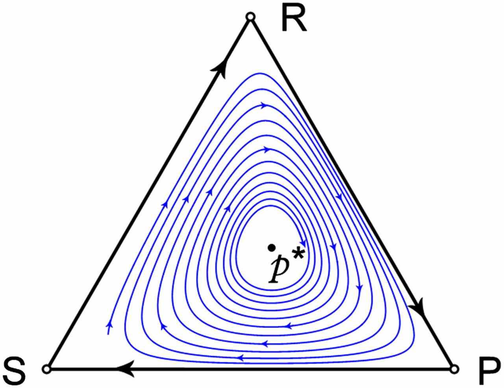
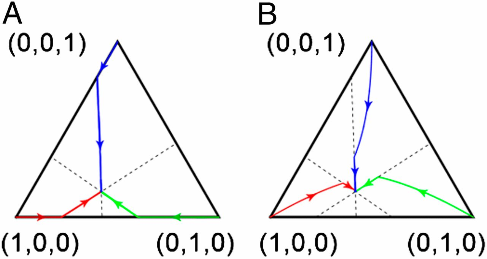

The replicator equation and other game dynamics
Summary
- Intro
- Symmetric Games
- Population Games
- Games with Continuous Strategy Spaces
- Multiplayer Games
- Asymmetric Games
- Asymmetric Extensive Form Games
- Conclusions
Game Dynamics
- Model how individuals or populations change their strategy over time based on payoff comparisons
- Contrast with noncooperative game theory (NE)
- Assume that strategies with higher payoff do better
The Replicator Equation
- Most important game dynamics
- First game dynamics studied in connection with evolutionary game theory
- We'll take a look at it in a minute
Evolutionary Game Theory
- Developed by Maynard Smith
- Predict evolutionary outcome of population behavior
- Payoff translated as fitness
Time matters
- Considering a large, well-mixed, single species
- Frequency of a strategy changes under the replicator equation
- Change rate equal to difference between its expected payoff and the average population payoff
It's Evolution
- Constant strategy payoffs $\rightarrow$ Everyone plays the highest payoff strategy
- A result true in all game dynamics, and in biological terms...
It's Darwin's survival of the fittest, through natural selection
What if...
- Individual payoff depends on actions of others
- EGT early success
Evolutionarily Stable Strategy
- Intuitive concept of uninvadability
- Strategy S is an ESS if $\exists$ $x$ small and positive so that S counters every level $x$ invasion
- Every individual will adopt strategy S at the end
ESS Formal Definition
- S is an ESS if:
- $E(S,S) > E(T,S)$ or
- $E(S,S) = E(T,S)$ and $E(S,T) > E(T,T)$ $\forall T \neq S$
Natural Selection in Human Societies
- Individuals and societies alter their behavior based on payoff consequences
- Here emerges the Replicator Equation
- For example: individuals making rational decisions on how to imitate observed strategies that currently receive higher payoff
Matrix Games
- Finite set of m pure strategies $\{e_{1}, e_{2}, \cdots, e_{m}\}$
- $m$ x $m$ payoff matrix $A$
-
$a_{ij} = \pi(e_{i}, e_{j})$ for $i,j = 1, \cdots, m$
Continuous-Time Pure Strategy Replicator Equation
$\boxed{\dot{p}_{i}=p_{i}(\pi(e_{i}, p)-\pi(p, p)) \text{ for } i = 1, \ldots, m}$
- Per capita growth rate in the number $n_{i}$ of individuals using strategy $e_{i}$ at time $t$
- $\pi$ expected payoff of $e_{i}$ from a single interaction with a random individual from the large population
-
$p$ is the population state in the strategy simplex
- $\Delta^{m} \equiv \{(p_{1}, p_{2}, \ldots, p_{m})\mid\sum_{j=1}^{m}{p_{j}}=1, 0 \leq p_{j} \leq 1\}$
-
$p_{i}$ proportion of population using strategy $e_{i}$ at time $t$
- $p_{i} = n_{i}/\sum_{j=1}^{m}{n_{j}}$
- $\pi(p, p) = \sum_{j=1}^{m}{p_{i}\pi(e_{i}, p)}$ population mean payoff
Theorem 1
The replicator equation for a matrix game satisfies:
- A stable rest point is a NE
- A convergent trajectory in the interior of the strategy space evolves to a NE
- A strict NE is locally asymptotically stable
More on Theorem 1
- Folk Theorem of Evolutionary Game Theory applied to the replicator equation
-
Biologists can predict the evolutionary outcome of their stable systems
- By examining NE behavior of the underlying game
-
Individuals as rational decision makers
- Natural selection through fitness drives system to stable outcome
- Paradigm shift toward strategic reasoning in population biology
Strategic Reasoning
- Enhances the importance of strategic reasoning
- Based on the concept of ESS
- J. M. Smith wanted to be more precise on the ESS definition
Maynard on ESS
In a matrix game, if most individuals in the population use $p^{*}\in\Delta^{m}$ with the rest using a mutant strategy $p$, then the mutant strategy will go extinct iff
- $\pi(p, p^{*})\leq\pi(p^{*}, p^{*})$ (NE condition) and
- $\pi(p^{*}, p) \gt \pi(p, p) \text{ if } \pi(p, p^{*})=\pi(p^{*}, p^{*})$ (stability condition)
$p^{*}\in\Delta^{m}$ is then an ESS if it satisfies these two conditions for all other $p\in\Delta^{m}$
Theorem 2
- $p^{*}$ is an ESS of a matrix game iff $\pi(p^{*}, p) > \pi(p, p) \forall p \in \Delta^{m}$ sufficiently close (but not equal) to $p^{*}$
- An ESS $p^{*}$ is a locally asymptotically stable rest point of the replicator equation
- An ESS $p^{*}$ in the interior of $\Delta^{m}$ is a globally asymptotically stable rest point of the replicator equation
Theorem 2
-
These statements are not always true
- Three-strategy games that exhibit cyclic dominance
Example 1
Generalized Rock Scissors Paper game
$\begin{array}{l|c|c|c}
& R & S & P\\
\hline
R & 0 & b_{2} & -a_{3}\\
\hline
S & -a_{1} & 0 & b_{3}\\
\hline
P & b_{1} & -a_{2} & 0
\end{array} = \begin{array}{c|c|c}
R & S & P\\
\hline
0 & 6 & -4\\
\hline
-4 & 0 & 4\\
\hline
2 & -2 & 0
\end{array}$
Example 1
- R beats S (strictly dominates), S beats P and P beats R
- Dominance implies that there is no NE on the boundary of $\Delta^{3}$
- $p^{*}=(10/29, 8/29, 11/29)$ complete mixed strategy interior
Example 1

- $p^{*}$ is globally asymptotically stable under the replicator equation
- $p^{*}$ is not an ESS
- $\pi(e_{1}, p^{*})=\pi(p^{*},p^{*})=4/29$
- $\pi(p^{*}, e_{1})=-(10/29)<0=\pi(e_{1}, e_{1})$
Cyclic behavior
-
Biology
-
Human behavior
- Business cycles
- Emergence/Disappearance of fads
Symmetric Population Games
- Straightforward generalizations of matrix games
- Payoff $\pi(e_{i}, p)$ arbitrary continuous function of strategy $e_{i}$ and population state $p\in\Delta^{m}$
- If $\pi(e_{i}, p)$ is linear in the components of $p$
- Equating fitness to reproductive success leads to the replicator equation on $\Delta^{m}$
-
Interior ESS no longer need to be globally asymptotically stable
Example 2
Habitat Selection Game and Ideal Free Distribution
- HSG from Fretwell and Lucas
-
Predicting species distribution among several patches
- Individuals move to patches with higher payoff
- Ideal Free Distribution
- Fitness of individuals in occupied patch $\geq$ Their fitness in unoccupied patch
-
Population game
- $H$ patches
- Individual's strategy $e_{i}$: being in patch $i$ $(\text{for }i=1,\ldots,H)$
- Equate the payoff of $e_{i}$ to the fitness in this patch
Example 2
-
If patch fitness decrease in patch density
- Unique IFD per population size
- IFD is a globally asymptotically stable ESS under the replicator eqaution
Example 2
Let
- $p\in\Delta^{H}$ be a distribution among the patches
- $\pi(e_{i}, p)$ be the fitness in patch $i$
Because
- Vector field $(\pi(e_{1}, p),\ldots, \pi(e_{H}, p))$ gradient of $F(p)\in\Delta^{H}$
We have a potential game
Example 2
- Strictly stable game
- Unique ESS $p^{*}$ globally asymptotically stable under the replicator equation
-
Continuous-time migration dynamics
- $\dot{p} = I(p)p - p$
- $I(p)$: $H x H$ migration matrix
- $I_{ij}(p)$: prob. individual in patch $j$ moves to patch $i$ (per unit time), current patch distribution $p$
Theorem 3
Suppose patch fitness is a decreasing function of patch density in a single-species habitat selection game. Then any migration dynamics 3 that satisfies the following two conditions evolves to the unique IFD.
- Individuals never move to a patch with lower fitness
- If there is a patch with higher fitness than some occupied patch, some individuals move to a patch with highest fitness
More on Theorem 3
- Three patches $\pi(e_{1}, p) \gt \pi(e_{2}, p) \gt \pi(e_{3}, p)$
$I^{1}(p)\equiv\begin{bmatrix} 1 & 1 & 1 \\ 0 & 0 & 0 \\0 & 0 & 0\end{bmatrix}I^{2}(p)\equiv\begin{bmatrix} 1 & 1/3 & 1/3 \\ 0 & 2/3 & 1/3 \\0 & 0 & 1/3\end{bmatrix}$
More on Theorem 3
-
Corrisponding game dynamics

- All trajectories converge to the IFD
Games With Continuous Strategy Spaces
Continuous it's complicated
-
Game dynamics with a continuum pure strategies $S$
- It's complicated
- Individual payoff depends on the population state $p$
- $p$ is a distribution in the set of probability measures $\Delta(S)$
-
Assumptions make your life easier
- Monomorphic population at its mean $x \in S$
- $x$ evolves through trait substitution in the direction $y$